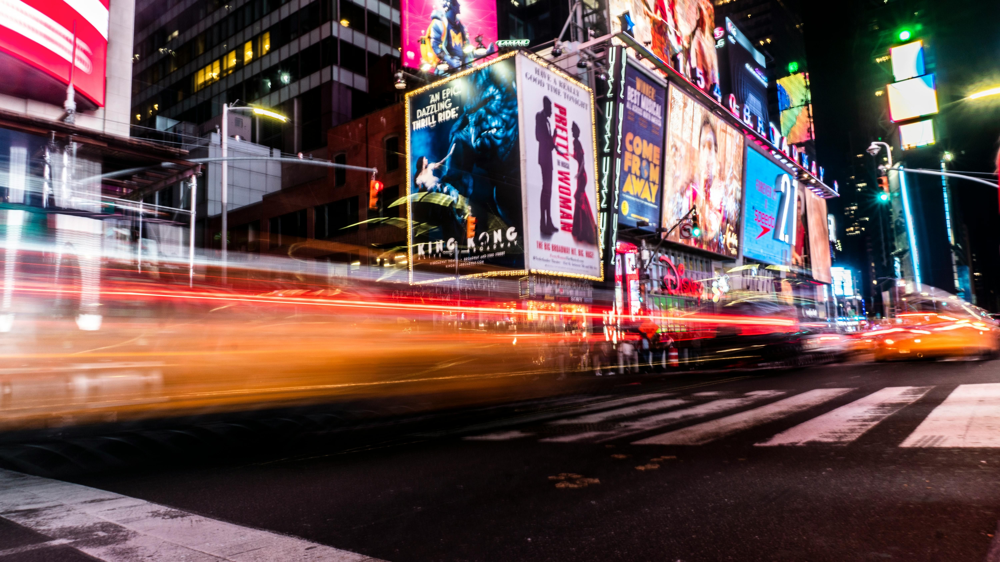
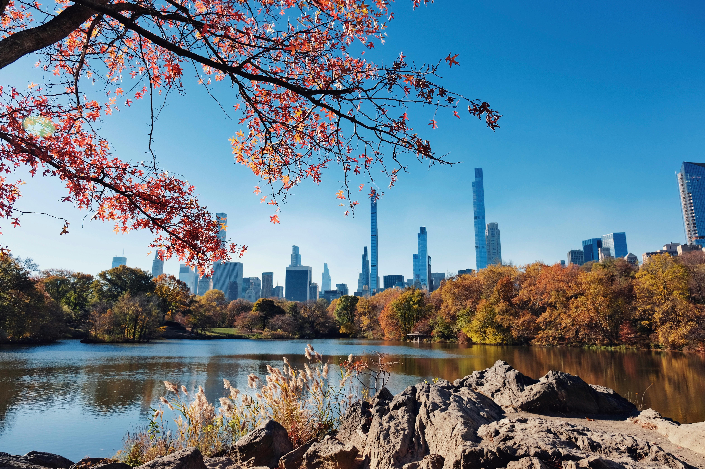

About

New York City comprises 5 boroughs sitting where the Hudson
River meets the Atlantic Ocean. At its core is Manhattan,
a densely populated borough that’s among the world’s major
commercial, financial and cultural centers. Its iconic sites
include skyscrapers such as the Empire State Building and
sprawling Central Park. Broadway theater is staged in neon-lit
Times Square.
New York is a global center of finance and commerce, culture,
technology, entertainment and media, academics and scientific
output, the arts and fashion, and, as home to the headquarters of the United Nations,
international diplomacy.
Geography

New York City lies at the mouth of the Hudson River, covering 778 km² across five boroughs:
Manhattan,
Brooklyn, Queens, The Bronx, and Staten Island. Surrounded by rivers and bays, it has a humid
subtropical
climate with hot summers and cold winters. Waterways shape its iconic urban landscape.
Exploring New York's 24/7 Lifestyle

New York, "The City That Never Sleeps," thrives on its 24/7 energy. From Times Square’s glowing
lights
to late-night diners and round-the-clock subway services, the city offers endless activities. Its
vibrant
nightlife, nonstop business hubs, and cultural events embody its dynamic, sleepless spirit.
Tour Destination
The magic of New York comes alive in every season, but theres something extra special during the fall
and winter months.
Dive into the city’s renowned cultural events, holiday celebrations, and dazzling winter displays.
Each corner of this
vibrant metropolis invites exploration, from skyline views to cozy cafes nestled in charming
neighborhoods.
Central Park

Central Park is a National Historic Landmark (1963) and a Scenic Landscape of the City of New
York (1974).
Located in what is now the center of Manhattan, the site was far from the built-up areas of the
City when
planning for the Park began in the 1850s.
Times Square

Times Square is a major commercial intersection, tourist destination, entertainment hub, and
neighborhood in
the Midtown Manhattan section of New York City. It is formed by the junction of Broadway,
Seventh Avenue,
and 42nd Street.
New York City: Statue of Liberty

Explore the Statue of Liberty, Ellis Island, and their museums at your own pace with self-guided
audio guides.
Soak up the views of the iconic skyline with a round-trip ferry service from New Jersey.